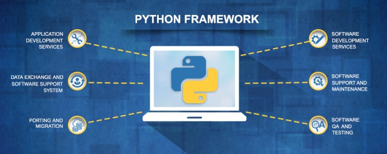

(Sponsors) Get started learning Python with DataCamp's free Intro to Python tutorial. Learn Data Science by completing interactive coding challenges and watching videos by expert instructors. Start Now!
3 Tips to Hire a Talented Python Developer
Updated on Jan 07, 2020
Python is as yet one of the most unique and adaptable programming languages nowadays. Intended all things considered and simple, Python's adaptability has made it appropriate for both progressed and general programming assignments, and it very well may be found wherever from Reddit to Youtube and even Instagram.
Companies that are hoping to hire a Python developer but don't know precisely what they should search for in an applicant can without any stretch to familiarize themselves with the necessary qualities a talented software engineer should possess. You don't should be a specialist in Python, and in all probability you're not all that that is the reason you're procuring one, to discover a developer that meets your requirements.

Test their skills #
Before taking somebody in your group, it's always good to see them in real life. With developers, you can test their skills utilizing an established template, or make your dependent on a mockup of your actual product. While testing a conceivable hire is a proficient method for seeing if or not they have the necessary skills expected to take care of business, it can likewise give you a feeling of their unique style.
Here are a couple of things you can adopt immediately just by administering a test:
Tests delineate the manners by which a developer tackles an undertaking, while likewise observing to what extent it takes for them to complete an errand
You'll get a feeling of whether your potential hire sets aside an effort to ponder their very own work, and if they step up to the plate, discovering approaches to improve the last.
A gifted software engineer may make their very own few suggestions, demonstrating their drive and innovativeness.
Notwithstanding flaunting their skills, evaluating potential up-and-comers is a valuable method to start up a discussion and check whether your potential colleague communicates enthusiasm for your product. Regardless of whether you've discovered an elite player developer, if they appear to be impartial about your venture, you should proceed onward.
Work with a freelancer #
Taking on a Python developer, will obviously, fortify your programming cleaves, but remember that tossing another person in with the general mish-mash will directly affect the entire group. As programming can be effectively done from anyplace on the planet, on account of a quickly developing independent economy, companies hoping to hire another colleague are never again restricted to local networks.
Here is a portion of the manners in which that present communication tools have empowered advanced networks making it both reasonable and attractive to hire an independent developer:
Tools like Slack and Zoom have made it simpler than at any other time to stay in contact with remote representatives on an everyday premise
Platforms like Github and Bitbucket are coding vaults that are essential to utilize and furthermore go about as an informal organization for developers.
InVison and Basecamp are only two of the many group-friendly tools out there that keep you on top of it and enable you to change and alter designs and thoughts progressively
Another special reward to working with a remote developer is approaching an abundance of differed encounters outside of your local expert network. Independent developers will, in general, have changed resumes because of their diverse clientele and undertakings, in this way, allows your entire group to diversify their system and gain from one another.
They know their market #

A talented and devoted Python developer doesn't merely have the foggiest idea how to compose a rich bit of code, but should likewise be a specialist in their field. A developer who knows the ins and of their market somebody you'll need in your group. Not exclusively are they state-of-the-art on changes and developments occurring in their locale, but it demonstrates they are eager to go well beyond, grasping progress at any stage.
A portion of the key features that show your potential hire realizes their market like the back of their hand:
Any developer understands that programming language is continually changing, so they will know about any updates that could upgrade or improve their work
Notwithstanding understanding changes in syntax, a software engineer should be focused on leading some normal maintenance every once in a while, checking their past work, regardless of whether it is by all accounts running smoothly.
A Pythonist should use unit testing, notwithstanding for the simplest of errands, which is a viable method to check if there are any issues, for example, syntax or consistent mistakes.
It's anything but difficult to overlook that when contracting somebody for specific expertise that you aren't going to have the option to screen their progress, particularly if you don't speak Python. A developer that puts time into checking and improving their work will improve proficiency and precision over the long haul, guaranteeing you don't need to stress when it comes time to discharge your product to the world.
Author Bio:
Alex Jone Works in a HR and Recruitment at Alliance Recruitment Agency- an IT Recruitment Agency. He specializes in helping with international recruiting, staffing, HR services and Careers advice service for overseas and international businesses.
Facebook: https://www.facebook.com/Alliancerecruitmentagency/
Twitter: https://twitter.com/career_alliance
Other Tutorials (Sponsors)
This site generously supported by DataCamp. DataCamp offers online interactive Python Tutorials for Data Science. Join over a million other learners and get started learning Python for data science today!

View Comments